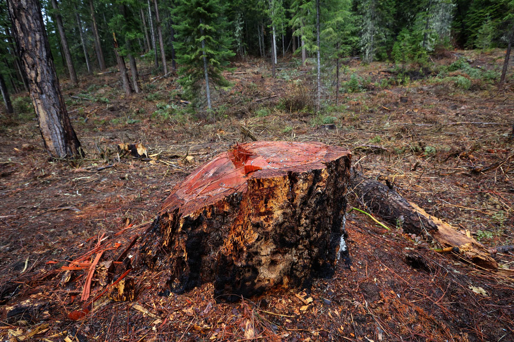

<%= t.process(markdown.intro) %>
US Forest Service
Loggers were supposed to leave trees larger than 20 inches when they cut a fire line into the woods near Leavenworth. But many much larger trees were felled, including this giant.
<%= t.process(markdown.story1) %>

Ken Lambert / The Seattle Times
"The big stumps, the spindly trees left behind, you can’t justify it," said Rich Haydon, a local resident opposed to the cut. "I am not going to let this go. It doesn’t make sense in terms of fire fighting, or what we would do in timber sales in this day and age."
<%= t.process(markdown.story2) %>
As a part of the fire planning effort, the US Forest Service models the likelihood that the fire will spread beyond a certain point. The map shown displays the bounds of the fire in dark orange, and the fire line is shown in black.
Modeling on Aug. 27 predicted a high probability that the fire would head south, possibly threatening Plain, Ardenvoir and areas nearby. The fire line was planned accordingly and work began three days later.
Quickly, however, it became clear that the fire was not likely to spread. The weather was rainy and cool. A model run on Sept. 5 put the odds of the fire's spread beyond the line at less than 1%.
Loggers continued cutting down trees for nine more days. The markers shown here are places where repairs would be needed to correct the environmental damage to fish and owl habitat.
Source: US Forest Service
Thomas Wilburn / The Seattle Times
<%= t.process(markdown.story3) %>

Ken Lambert / The Seattle Times
Nearly four million board feet of timber were cut in the fire line.
<%= t.process(markdown.story4) %>
Northern Spotted Owl, by the numbers
Due to the emergency status of the cut, and the haste with which it was conducted, acres of animal habitat were destroyed, including trees and nesting grounds for the spotted owl. Listed as threatened under the Endangered Species Act, spotted owls are largely or exclusively associated with forests and require lots of space. In addition to home ranges of thousands of acres, the mean dispersal range for juveniles is more than 9 miles for males and more than 15 miles for females. Habitat losses due to logging, fire, and invasion of barred owls are among chief threats to their survival.
- 6,658 acres Size of a typical owl home range in the Eastern Cascades (roughly a circle with a 1.8-mile radius)
- 46% Portion of the Chiwawa reserve that's considered "suitable" for owls, according to a 1997 assessment
- 55-77% Decline in Washington's spotted owl population from 1985 to 2013
- 237 acres Amount of forest cut for the Wolverine fire line
- 114 acres Amount of the cut that crossed through owl habitat (roughly 48%)
Source: US Geological Survey, Washington Department of Fish and Wildlife, US Forest Service
<%= t.process(markdown.story5) %>

Ken Lambert / The Seattle Times
A big ponderosa survived fire in the past, but it was no match for loggers. Fire resistant species such as ponderosa were supposed to be protected.
<%= t.process(markdown.story6) %>